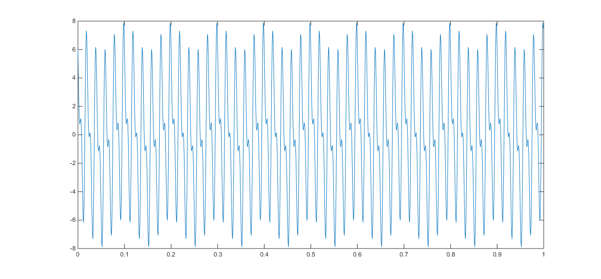
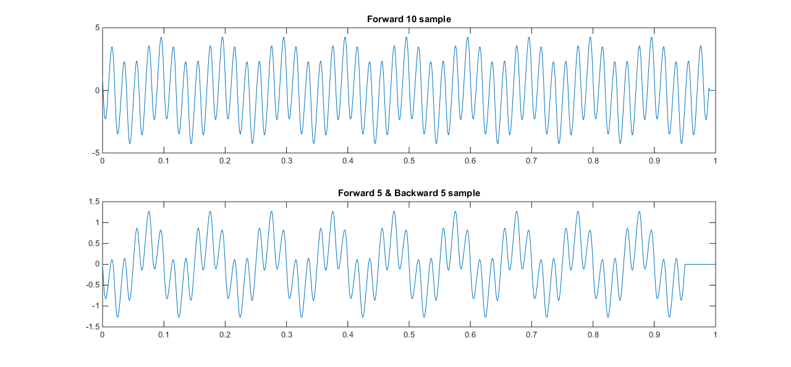
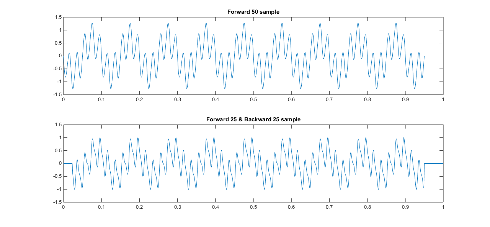

Contents
Create noise signal
fs = 1000;
t = 0:1/fs:1-1/fs;
sig1 = cos(2*pi*10*t) + cos(2*pi*100*t + pi/2)*3 + cos(2*pi*50*t)*5;
sig1 = sig1 - mean(sig1);
figure(1)
title('Noise Signal')
plot(t,sig1);

Create Mean Average Filter for 10 sample
sig2 = zeros(1,fs);
for n = 1:1000-10
sig2(1,n) = sum(sig(n:n+10))/10;
end
figure(2)
subplot(2,1,1);
plot(t,sig2);
title('Forward 10 sample')
sig3 = zeros(1,fs);
for n = 1:1000-10
resutlFilter = 0;
if n >= 5
resutlFilter = (sum(sig1(n:n-5)) + sum(sig1(n:n+5)))/10;
end
sig3(1,n) = resutlFilter;
end
subplot(2,1,2);
plot(t,sig4);
title('Forward 5 & Backward 5 sample')

Create Mean Average Filter for 50 sample
sig4 = zeros(1,fs);
for n = 1:1000-50
sig4(1,n) = sum(sig1(n:n+50))/50;
end
figure(3);
subplot(2,1,1);
plot(t,sig4);
title('Forward 50 sample')
sig5 = zeros(1,fs);
for n = 1:1000-50
resutlFilter = 0;
if n >= 25
resutlFilter = (sum(sig1(n:n-25)) + sum(sig1(n:n+25)))/50;
end
sig5(1,n) = resutlFilter;
end
subplot(2,1,2);
plot(t,sig5);
title('Forward 25 & Backward 25 sample')
